Praktikum 4: Navigasi dan Input Tanggal
A. Pendahuluan
Pengembangan aplikasi mobile masa kini sangat bergantung pada kemampuan antarmuka untuk menampilkan informasi secara rapi melalui sejumlah layar yang berbeda. Dalam ekosistem Flutter, pengaturan alur perpindahan antarlayar serta pertukaran data antar-komponen menjadi dasar penting untuk menciptakan pengalaman pengguna yang dinamis dan responsif. Pada aplikasi Expense Tracker, proses navigasi dari layar Utama ke layar formulir input maupun layar detail transaksi membutuhkan mekanisme pengisian data yang tertata dan terjamin keamanannya.
Praktikum ini menekankan penerapan konsep tumpukan (stack) menggunakan widget Navigator yang disediakan Flutter, di mana perintah Navigator.push dipakai untuk menambahkan rute layar baru ke dalam tumpukan, sedangkan Navigator.pop digunakan untuk menghapus layar paling atas agar kembali ke halaman sebelumnya. Di samping itu, praktikum ini juga membimbing dalam mengimplementasikan pengiriman data antar-widget melalui variabel final dan constructor yang diberi klausa required, serta menambahkan elemen interaktif berupa pemilih tanggal berbasis showDatePicker dan mekanisme validasi pada formulir input transaksi.
B. Tujuan
Tujuan dari praktikum ini adalah:
- Memahami serta menerapkan prinsip tumpukan (stack) dalam mekanisme navigasi antarmuka di Flutter dengan memanfaatkan kelas Navigator.
- Menggunakan perintah Navigator.push untuk membuka halaman baru dan Navigator.pop untuk menutup layar formulir setelah proses penyimpanan data selesai dilakukan.
- Mewujudkan pertukaran data antar-halaman melalui variabel bertipe final dan constructor yang dilengkapi penanda required.
- Menambahkan komponen pemilih tanggal (calendar picker) dengan memanfaatkan fungsi asinkron showDatePicker pada kolom input tanggal transaksi.
- Mengaktifkan validasi data input pada formulir transaksi menggunakan GlobalKey<FormState> serta menampilkan notifikasi umpan balik kepada pengguna lewat SnackBar.
C. Isi
Praktikum
Buat file baru bernama detail_transaction_screen.dart, lalu tuliskan kode berikut.
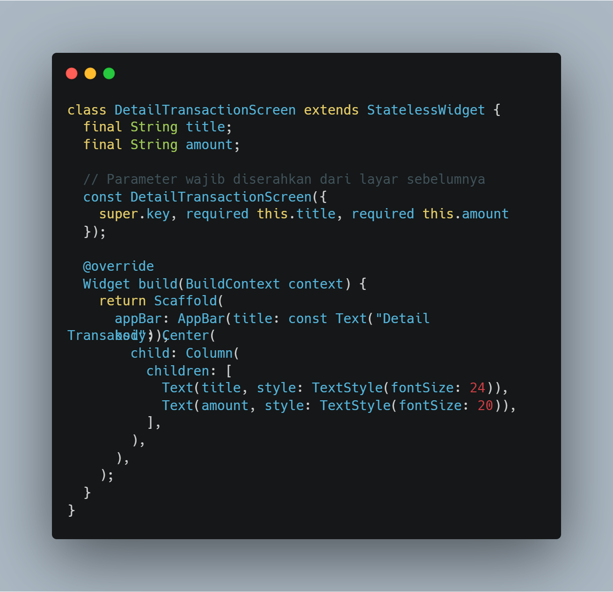
Kode ini membuat widget Stateless bernama DetailTransactionScreen yang bertugas menampilkan halaman detail transaksi. Widget ini wajib menerima dua data dari halaman sebelumnya, yaitu judul dan nominal, lewat konstruktornya. Setelah itu, kedua teks tersebut ditampilkan secara vertikal dan berada tepat di tengah layar dengan memanfaatkan kombinasi widget Scaffold, Center, dan Column.
Kembali ke halaman Dashboard. Pada widget ListTile yang menampilkan daftar transaksi, tambahkan properti onTap.
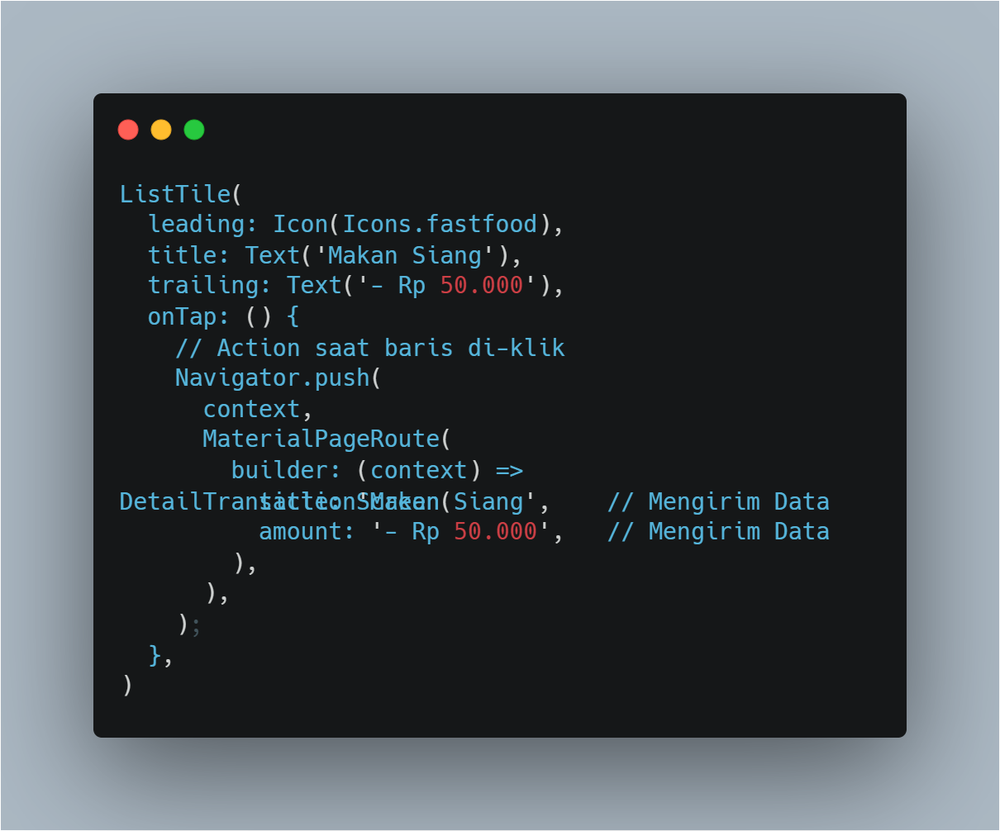
Kode ini menghasilkan sebuah baris daftar transaksi (ListTile) yang dilengkapi ikon makanan, judul "Makan Siang", dan teks nominal harga. Ketika pengguna mengetuk baris tersebut, fungsi Navigator.push akan dipanggil untuk membuka halaman DetailTransactionScreen sambil mengirimkan data judul dan nominal transaksi ke halaman tujuan.
Buka kembali file add_transaction_screen.dart. Tujuannya adalah agar formulir otomatis tertutup dan kembali ke Dashboard setelah tombol Simpan ditekan.
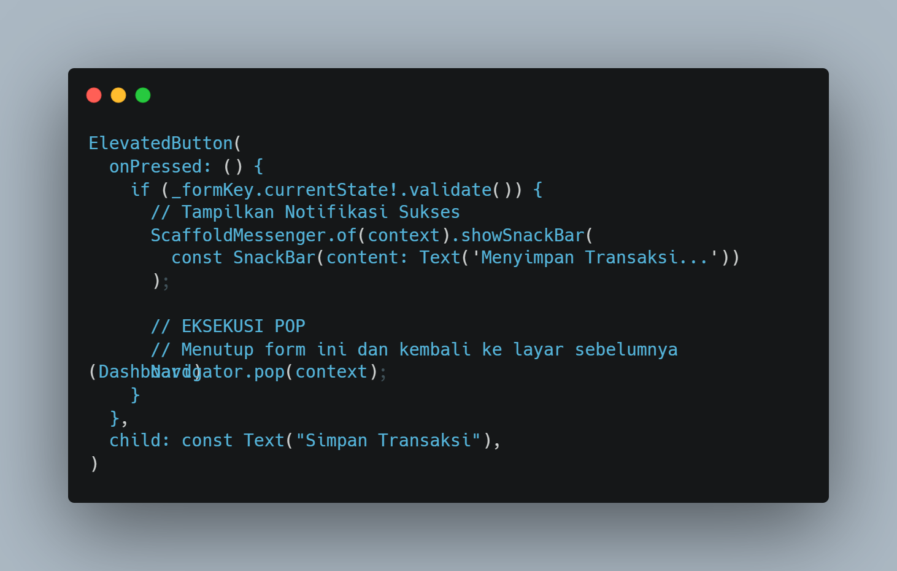
Kode ini membuat tombol berlabel "Simpan Transaksi". Saat tombol ditekan, seluruh input formulir akan divalidasi terlebih dahulu. Jika semua data sudah valid, aplikasi akan menampilkan notifikasi melayang bertuliskan "Menyimpan Transaksi...", lalu menutup halaman formulir dan kembali ke halaman utama menggunakan perintah Navigator.pop(context).
Sekarang, setiap item transaksi di Dashboard dapat diklik dan akan membuka halaman detail yang menampilkan data lengkap transaksi tersebut. Jika proses ini sudah selesai, hasilnya akan tampak seperti berikut:
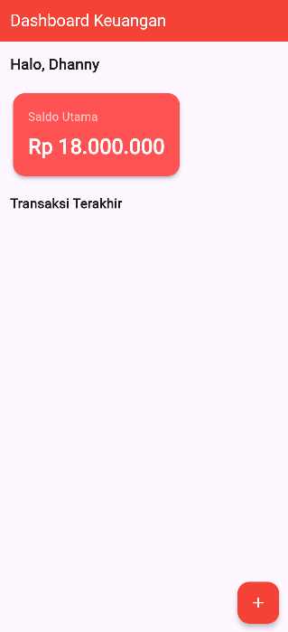
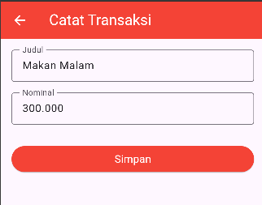
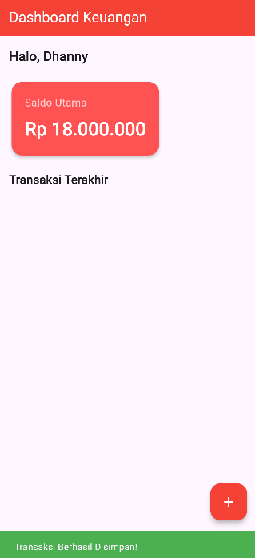
Tugas
Tambahkan satu input baru sebelum tombol Simpan untuk mengisi Tanggal Transaksi.
- Bisa menggunakan TextFormField biasa (format teks DD/MM/YYYY).
- Tombol plus: gunakan fungsi showDatePicker.
- Berikan validasi wajib diisi!
Buat satu TextEditingController tambahan yang khusus digunakan untuk menangani teks tanggal.
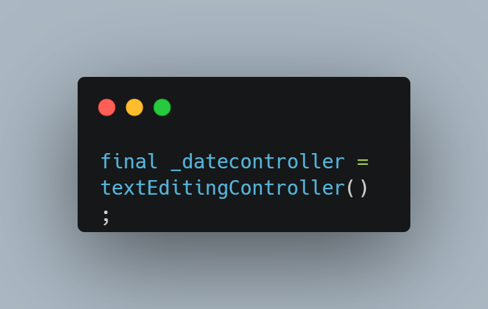
Controller ini berperan sebagai tempat penyimpanan dan pengendali nilai teks tanggal yang nantinya akan muncul di kolom input setelah pengguna memilih tanggal melalui kalender.
Susun sebuah fungsi untuk menampilkan modal kalender standar dari Flutter.
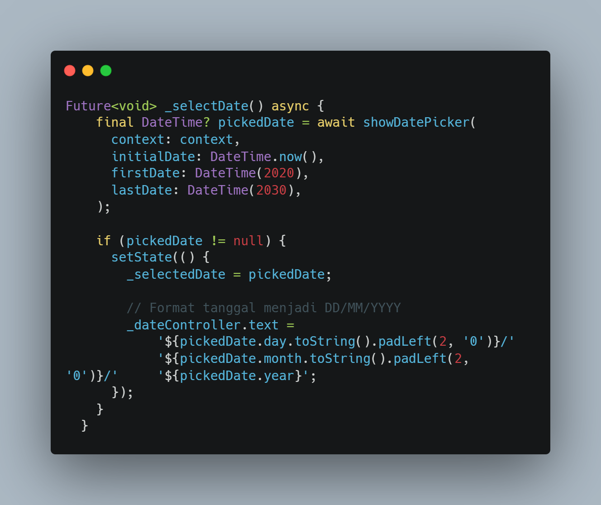
Fungsi showDatePicker ini akan memunculkan jendela kalender. Apabila pengguna memilih suatu tanggal, tanggal itu akan diformat ulang ke pola DD/MM/YYYY, lalu hasilnya disimpan ke dalam _dateController.
Sisipkan sebuah kolom input tanggal tepat di atas tombol Simpan.
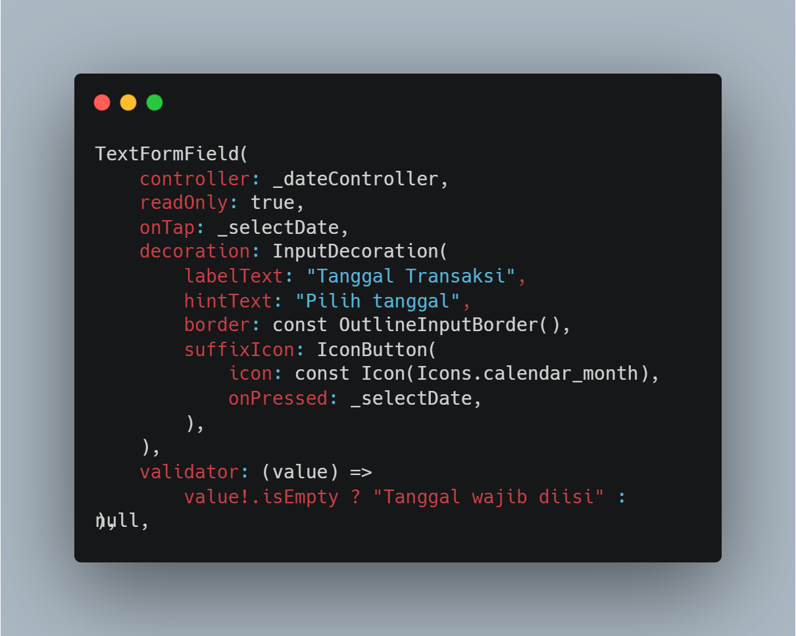
Komponen TextFormField yang ditambahkan ini diatur dengan readOnly: true, sehingga pengguna tidak bisa mengetik tanggal secara langsung, melainkan harus memilihnya lewat modal kalender. Event onTap pada kolom input dan tombol suffixIcon diarahkan ke fungsi _selectDate, sehingga kalender akan otomatis muncul baik saat kolom maupun ikon kalender ditekan. Validator yang disertakan bertugas memeriksa kelengkapan data dan akan menampilkan pesan "Tanggal wajib diisi!" jika tombol Simpan ditekan sementara kolom tanggal masih kosong.
Untuk outputnya akan terlihat seperti ini:
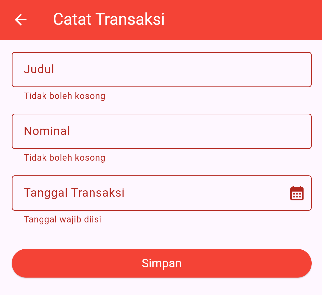
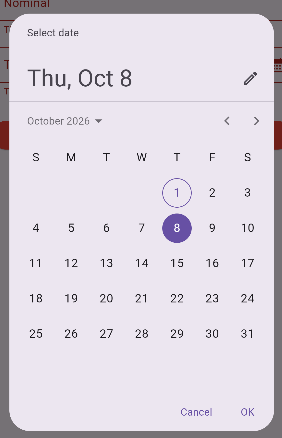
D. Kesimpulan
Berdasarkan pelaksanaan praktikum, dapat ditarik kesimpulan bahwa manajemen navigasi antarmuka di Flutter beroperasi dengan mengandalkan struktur data tumpukan yang diatur secara optimal oleh widget Navigator. Penggunaan Navigator.push terbukti ampuh untuk menampilkan halaman baru, seperti formulir transaksi atau halaman detail transaksi, sementara Navigator.pop memungkinkan aplikasi menutup layar yang sedang aktif dan mengembalikan kendali ke halaman sebelumnya tanpa mengganggu state aplikasi. Proses pengiriman data antar-halaman yang memanfaatkan variabel final yang dikirim lewat constructor dengan parameter bernama (named parameter) bertanda required berhasil memastikan ketersediaan data secara aman dan konsisten dari halaman Dashboard menuju halaman Detail Transaksi.
Di luar sistem navigasi, pengembangan formulir interaktif pada aplikasi Expense Tracker berhasil ditingkatkan fungsionalitasnya melalui penambahan fitur pemilih tanggal berbasis showDatePicker serta pembatasan input manual dengan mengatur properti readOnly: true. Mekanisme validasi formulir menggunakan _formKey.currentState!.validate() menjamin bahwa semua data transaksi yang bersifat wajib, meliputi judul, nominal, dan tanggal, telah melewati proses validasi sebelum penyimpanan dijalankan. Perpaduan antara struktur navigasi yang tepat, pertukaran data yang terjamin keamanannya, serta validasi formulir yang ketat menghasilkan arsitektur aplikasi mobile yang kokoh, terstruktur, dan responsif.